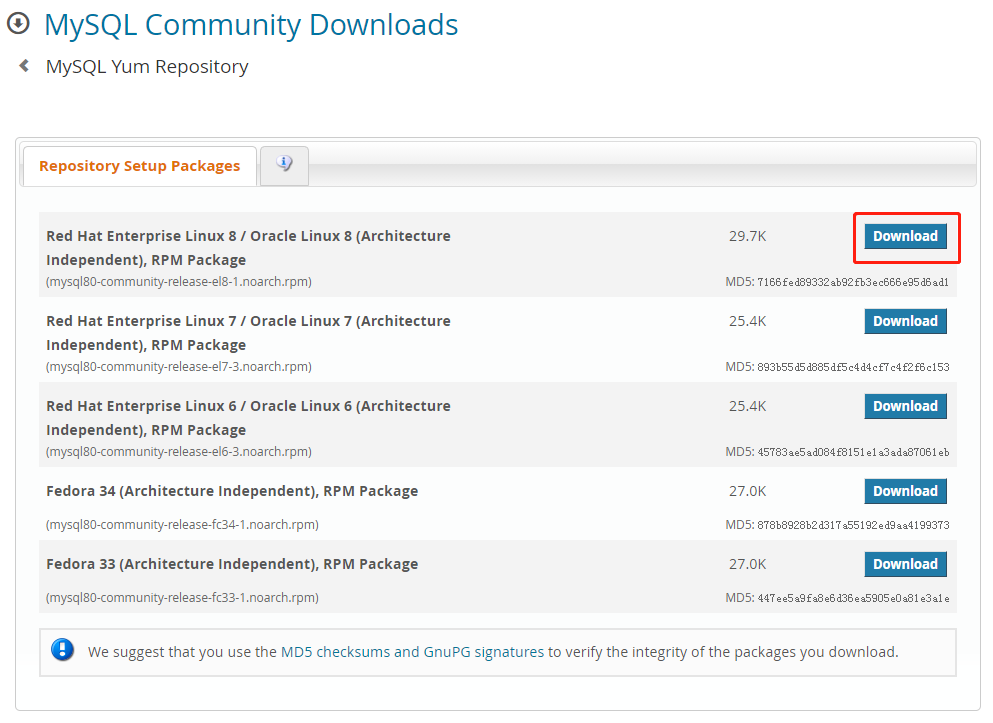
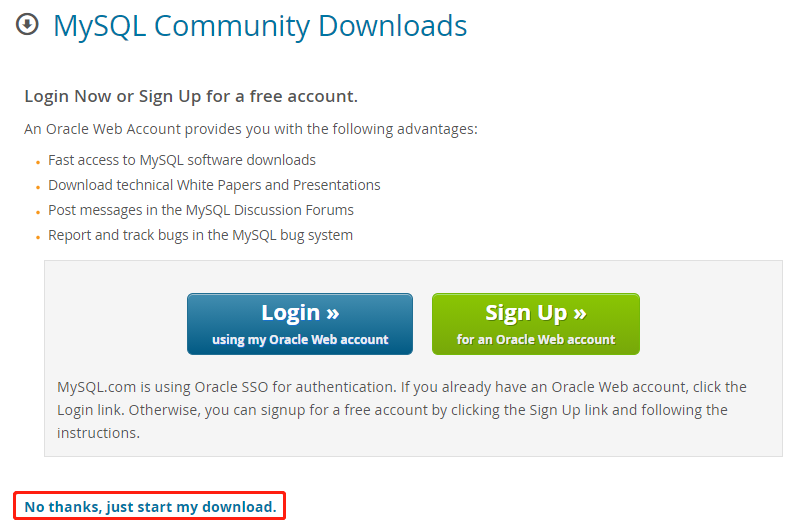
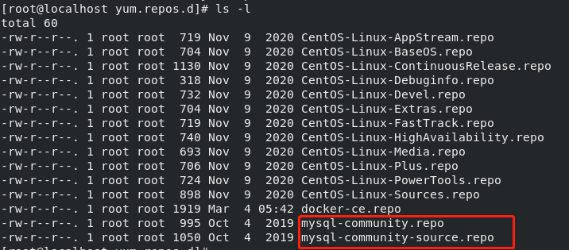
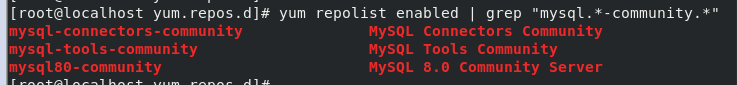
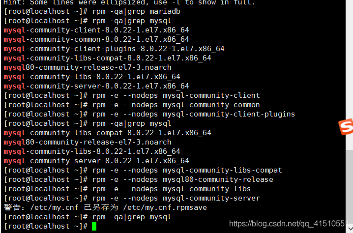
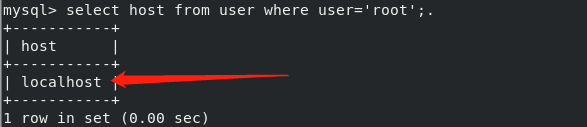

Linux安装MySQL - rpm 1. 安装 https://blog.csdn.net/qq_41510551/article/details/110731610
查看是否已经安装了mysql
打开网址：MySQL Yum存储库: https://dev.mysql.com/downloads/repo/yum/
找到对应linux的版本进行下载
1 2 cat /etc/redhat-release


下载和安装mysql源
1 wget https://dev.mysql.com/get/mysql80-community-release-el8-1.noarch.rpm
注： 如果显示wget未找到命令，则需要先安装wget：
yum -y install wget
然后再次执行上面命令
安装mysql源
1 sudo rpm -Uvh mysql80-community-release-el7-3.noarch.rpm
检查是否安装成功：
1 2 [root@localhost ~] [root@localhost yum.repos.d]

查看mysql相关资源
1 yum repolist enabled | grep "mysql.*-community.*"

选择masql版本（根据需求）
使用MySQL Yum Repository安装MySQL，默认会选择当前最新的稳定版本
1 2 3 4 5 6 yum repolist all | grep mysql sudo yum-config-manager --disable mysql80-community sudo yum-config-manager --enable mysql57-community
安装mysql
1 sudo yum install mysql-community-server
该命令会安装MySQL服务器 (mysql-community-server) 及其所需的依赖、相关组件，包括mysql-community-client、mysql-community-common、mysql-community-libs等。安装时间会比较长
注：可能会报：Error: Unable to find a match: mysql-community-server
解决办法：
1 2 3 yum module disable mysql yum -y install mysql-community-server
启动
1 2 3 4 5 6 7 8 9 10 11 systemctl start mysqld.service systemctl status mysqld.service systemctl stop mysqld.service systemctl restart mysqld.service
2. 修改密码及登录 2.1 初始密码 MySQL第一次启动后会创建超级管理员账号root@localhost，初始密码存储在日志文件中：
1 2 3 4 5 grep 'temporary password' /var/log /mysqld.log icx.ax;e/9gK
2.2 修改默认密码 1 2 3 4 5 6 7 8 9 10 mysql -uroot -p Enter password: mysql> ALTER USER 'root' @'localhost' IDENTIFIED BY 'password' ; mysql -uroot -proot@123 -h192.168.88.130
2.3 修改密码校验强度： 2.3.1 centos8以下 使用复杂密码，MySQL默认的密码策略是要包含数字、字母及特殊字符；/etc/my.cnf，添加validate_password=OFF，保存并重启MySQL
2.3.2 8以上 1 2 3 4 5 6 7 8 9 10 11 12 13 14 15 16 17 18 19 20 mysql> show variables like '%valid%' ; +--------------------------------------+--------+ | Variable_name | Value | +--------------------------------------+--------+ | innodb_validate_tablespace_paths | ON | | validate_password.check_user_name | ON | | validate_password.dictionary_file | | | validate_password.length | 8 | | validate_password.mixed_case_count | 1 | | validate_password.number_count | 1 | | validate_password.policy | MEDIUM | | validate_password.special_char_count | 1 | +--------------------------------------+--------+ 8 rows in set (0.01 sec) set global validate_password.policy=low;
3. 设置编码 3.1 查看编码 1 mysql> SHOW VARIABLES LIKE 'character%' ;
3.2 设置编码 1 2 3 [mysqld] character_set_server=utf8 init-connect='SET NAMES utf8'
4. 设置开机自启动 1 2 systemctl enable mysqld systemctl daemon-reload
5. 关闭防火墙 1 2 3 4 5 6 7 8 9 10 11 12 13 systemctl status firewalld firewall-cmd --state service firewalld start service firewalld restart service firewalld stop firewall-cmd --list-all
6. 删除mysql 检查mariadb
如无则跳过下面一条 删除mariadb
1 2 3 [root@localhost ~] [root@localhost ~] [root@localhost ~]
检查mysql
1 2 3 4 5 6 7 8 [root@localhost ~] mysql-community-client-8.0.22-1.el7.x86_64 mysql-community-common-8.0.22-1.el7.x86_64 mysql-community-client-plugins-8.0.22-1.el7.x86_64 mysql-community-libs-compat-8.0.22-1.el7.x86_64 mysql80-community-release-el7-3.noarch mysql-community-libs-8.0.22-1.el7.x86_64 mysql-community-server-8.0.22-1.el7.x86_64
删除mysql

SpringBoot + Mybatis-plus + mysql实现读写分离
参考网址：https://www.cnblogs.com/blacksmith4/p/13748414.html
1. 数据库设置 1.0 注 当主从复制读写分离建立成功后，从库就只能进行读取，不能进行其他的操作，否则会出错导致，Slave_SQL_Running变为No，响应报错信息会显示在Last_Error中：

出问题后解决方法：
将主库的数据备份出来，然后再导入从库即可
然后将从库断开stop slave;
再重新连接start slave;即可
1.1 修改uuid（对于克隆的虚拟机） 克隆的虚拟机会导致每个数据库的 uuid 相同，需要修改为不同的 uuid。
1.1.1 登陆mysql 1 2 3 4 5 show variables like 'datadir' ; select uuid();
1.1.2 进入datadir目录 1 2 3 4 cd /var/lib/mysql/vi auto.cnf
1.2 主库配置 主数据库（master）中新建一个用户用于从数据库（slave）读取主数据库二进制日志，sql 语句如下：
1 2 3 4 5 6 7 8 mysql> CREATE USER 'master' @'%' IDENTIFIED BY 'master@123' ; mysql> GRANT REPLICATION SLAVE ON *.* TO 'repl' @'%' ; mysql> flush privileges;
修改 mysql 配置文件vim /etc/my.cnf开启二进制日志，新增部分如下：
1 2 3 4 [mysqld] server-id=1 log-bin=master-bin log-bin-index=master-bin.index
重启数据库，查看主库状态：
1 mysql> show master status;

设置备份时需要忽略哪些库 默认情况下备份是主库的全部操作都会备份到从库，实际可能需要忽略某些库，可以在主库中增加如下配置：
1 2 3 4 5 6 7 binlog-ignore-db = mysql binlog-ignore-db = test binlog-ignore-db = information_schema binlog-do-db = game
1.3. 从库配置 1.3.1 修改 mysql 配置文件 vim /etc/my.cnf开启二进制日志，新增部分如下：
1 2 3 4 [mysqld] server-id=2 relay-log-index=slave-relay-bin.index relay-log=slave-relay-bin
1.3.2 连接主库 1 2 3 4 5 6 7 8 9 10 11 CHANGE MASTER TO MASTER_HOST='192.168.88.130' , MASTER_USER='master' , MASTER_PASSWORD='master@123' , MASTER_LOG_FILE='master-bin.000001' , MASTER_LOG_POS=156;
1.3.3 启动链路/备份 1 2 3 4 5 6 mysql> start slave; mysql> STOP slave;
1.3.4 查看是否连接成功 1 2 3 4 5 6 7 8 9 10 11 12 13 14 15 16 mysql> show slave status \G; Slave_IO_Running: Yes Slave_SQL_Running: Yes mysql -uroot -proot@123 -h192.168.88.130

2. 代码层面进行读写分离 2.0 前提 需要先配置好mybatis-plus
2.1 依赖 1 2 3 4 5 6 7 8 9 10 11 12 13 14 15 16 17 18 19 20 21 22 23 24 25 26 27 28 29 30 31 32 33 34 35 36 37 38 <dependency > <groupId > mysql</groupId > <artifactId > mysql-connector-java</artifactId > </dependency > <dependency > <groupId > com.baomidou</groupId > <artifactId > mybatis-plus-boot-starter</artifactId > <version > 3.4.2</version > </dependency > <dependency > <groupId > com.baomidou</groupId > <artifactId > mybatis-plus-generator</artifactId > <version > 3.4.1</version > </dependency > <dependency > <groupId > org.springframework.boot</groupId > <artifactId > spring-boot-starter-aop</artifactId > <version > 2.5.2</version > </dependency > <dependency > <groupId > com.alibaba</groupId > <artifactId > druid</artifactId > <version > 1.2.6</version > </dependency >
2.2 配置文件 1 2 3 4 5 6 7 8 9 10 11 12 13 14 15 16 17 18 19 20 21 22 23 24 25 26 27 28 29 30 31 32 33 34 35 36 37 38 39 40 41 42 43 44 45 46 47 48 49 50 51 52 53 54 55 56 57 58 59 60 61 62 63 64 65 66 67 68 69 70 71 72 73 74 75 76 77 78 79 80 81 82 83 84 85 86 87 88 89 90 91 92 93 94 95 mybatis-plus: mapper-locations: com/example/demo/mapper/*Mapper.xml typeAliasesPackage: com.example.demo.entity global-config: id-type: 0 field-strategy: 1 refresh-mapper: true configuration: map-underscore-to-camel-case: true cache-enabled: false jdbc-type-for-null: 'null' log-impl: org.apache.ibatis.logging.stdout.StdOutImpl spring: write-db-ip: 192.168 .88 .130 read-db-ip: 192.168 .88 .133 config: activate: on-profile: dev datasource: master: driver-class-name: com.mysql.jdbc.Driver url: jdbc:mysql://${spring.write-db-ip}:3306/test username: root password: root@123 initialSize: 5 minIdle: 1 maxActive: 50 maxWait: 60000 timeBetweenEvictionRunsMillis: 60000 minEvictableIdleTimeMillis: 300000 validationQuery: SELECT 1 FROM DUAL testWhileIdle: true testOnBorrow: false testOnReturn: false poolPreparedStatements: false filters: stat,wall,slf4j connectionProperties: druid: stat: mergeSql: true slowSqlMillis: 5000 slave: driver-class-name: com.mysql.jdbc.Driver url: jdbc:mysql://${spring.read-db-ip}:3306/test username: root password: root@123 initialSize: 5 minIdle: 1 maxActive: 50 maxWait: 60000 timeBetweenEvictionRunsMillis: 60000 minEvictableIdleTimeMillis: 300000 validationQuery: SELECT 1 FROM DUAL testWhileIdle: true testOnBorrow: false testOnReturn: false poolPreparedStatements: false filters: stat,wall,slf4j connectionProperties: druid: stat: mergeSql: true slowSqlMillis: 5000
2.3 SpringBoot启动类设置 1 2 3 4 5 6 7 @EnableCaching @SpringBootApplication(exclude = {DataSourceAutoConfiguration.class}) public class DemoApplication public static void main (String[] args) SpringApplication.run(DemoApplication.class, args); } }
若mybatis-plus的配置文件中未配置：开启springBoot事务，mapper文件扫描
启动类中还需配置:
1 2 @MapperScan("com.bbdog.dao.mapper*") @EnableTransactionManagement
2.4 创建数据源类型 1 2 3 4 5 6 7 8 9 10 11 12 13 public enum SourceName read("read" ), write("write" ); private String value; SourceName(String value) { this .value = value; } public String value () return this .value; } }
2.5 构建切换数据源类 1 2 3 4 5 6 7 8 9 10 11 12 13 14 15 16 17 18 19 20 21 22 23 24 25 26 27 28 29 30 31 32 33 34 35 36 37 38 39 40 41 42 43 44 45 46 47 48 49 50 51 52 53 54 55 56 57 58 59 60 61 62 public class DynamicDataSourceContextHolder private static final ThreadLocal<String> contextHolder = new ThreadLocal<String>() { @Override protected String initialValue () return SourceName.read.value(); } }; public static List<Object> dataSourceKeys = new ArrayList<>(); public static void setDataSourceKey (String key) contextHolder.set(key); } public static String getDataSourceKey () return contextHolder.get(); } public static void clearDataSourceKey () contextHolder.remove(); } public static boolean containDataSourceKey (String key) return dataSourceKeys.contains(key); } public static boolean addDataSourceKeys (Collection<? extends Object> keys) return dataSourceKeys.addAll(keys); } }
2.6 继承AbstractRoutingDataSource接口实现动态数据源 1 2 3 4 5 6 7 8 9 10 11 12 13 14 15 16 17 18 19 20 21 22 23 24 25 26 27 28 29 30 31 32 33 34 35 36 37 38 39 40 41 public class AutoChooseDataSource extends AbstractRoutingDataSource @Override protected DataSource determineTargetDataSource () return super .determineTargetDataSource(); } @Override protected Object determineCurrentLookupKey () return DynamicDataSourceContextHolder.getDataSourceKey(); } @Override public void setDefaultTargetDataSource (Object defaultDataSource) super .setDefaultTargetDataSource(defaultDataSource); } @Override public void setTargetDataSources (Map<Object, Object> dataSources) super .setTargetDataSources(dataSources); DynamicDataSourceContextHolder.addDataSourceKeys(dataSources.keySet()); } }
2.7 数据源配置类设置 参照自动配置类MybatisPlusAutoConfiguration.java中的SqlSessionFactory配置来为添加自己的动态数据源 可双击shift搜错MybatisPlusAutoConfiguration 查看该类内容
1 2 3 4 5 6 7 8 9 10 11 12 13 14 15 16 17 18 19 20 21 22 23 24 25 26 27 28 29 30 31 32 33 34 35 36 37 38 39 40 41 42 43 44 45 46 47 @Configuration public class DruidConfiguration @Bean(name = "write", destroyMethod = "close", initMethod = "init") @ConfigurationProperties(prefix = "spring.datasource.master") public DataSource master () return druidDataSource(); } @Bean(name = "read", destroyMethod = "close", initMethod = "init") @ConfigurationProperties(prefix = "spring.datasource.slave") public DataSource slave () return druidDataSource(); } @Bean("dataSource") @Primary public DataSource autoChooseDataSource () AutoChooseDataSource autoChooseDataSource = new AutoChooseDataSource(); Map<Object, Object> dataSourceMap = new HashMap<>(2 ); dataSourceMap.put(SourceName.write.value(), master()); dataSourceMap.put(SourceName.read.value(), slave()); autoChooseDataSource.setDefaultTargetDataSource(slave()); autoChooseDataSource.setTargetDataSources(dataSourceMap); return autoChooseDataSource; } @Bean public PlatformTransactionManager transactionManager () return new DataSourceTransactionManager(autoChooseDataSource()); } public DataSource druidDataSource () return new DruidDataSource(); } }
2.8 创建数据源切换注解 1 2 3 4 5 6 7 8 9 10 11 12 @Target({ElementType.METHOD, ElementType.TYPE}) @Retention(RetentionPolicy.RUNTIME) @Documented public @interface DataSource { SourceName value () ; }
2.9 创建数据源切换切面 1 2 3 4 5 6 7 8 9 10 11 12 13 14 15 16 17 18 19 20 21 22 23 24 25 26 27 28 29 30 31 32 33 34 35 36 37 38 39 40 41 42 @Aspect @Order(-1) @Component public class DynamicDataSourceAspect private static Logger _log = LoggerFactory.getLogger(DynamicDataSourceAspect.class); @Before("@annotation(dataSource)) ") public void switchDataSource(JoinPoint point, DataSource dataSource) { if (!DynamicDataSourceContextHolder.containDataSourceKey(dataSource.value().name())) { _log.error(" DataSource [{}] 不存在，使用默认 DataSource [{}] ", dataSource.value(), DynamicDataSourceContextHolder.getDataSourceKey()); } else { // 切换数据源 DynamicDataSourceContextHolder.setDataSourceKey(dataSource.value().name()); _log.debug(" 切换 DataSource 至 [{}] ，引起切换方法是 [{}]", DynamicDataSourceContextHolder.getDataSourceKey(), point.getSignature()); } } /** * 重置数据源 * * @param point * @param dataSource */ @After(" @annotation(dataSource) )") public void restoreDataSource(JoinPoint point, DataSource dataSource) { // 将数据源置为默认数据源 DynamicDataSourceContextHolder.clearDataSourceKey(); _log.debug(" 重置 DataSource 至 [{}] ，引起重置的方法是 [{}]", DynamicDataSourceContextHolder.getDataSourceKey(), point.getSignature()); } }
2.10 示例 1 2 3 4 5 6 7 8 9 10 11 12 13 14 15 16 @GetMapping("list") @DataSource(SourceName.read) public String getUser () List<User> list = userService.list(); return JSONObject.toJSONString(list); } @GetMapping("save") @DataSource(SourceName.write) public String save (@RequestParam String userName) User user = new User(); user.setName(userName); boolean save = userService.save(user); return "null" ; }
报错 1. 1130 - Host XXX is not allowed to connect to this MySQL server。 由于Mysql配置了不支持远程连接引起的
登录到服务器的数据库 查询主机配置信息 1 2 3 use mysql; select host from user where user='root' ;
可以看到当前主机配置信息为localhost.

修改配置信息 将Host设置为通配符%
Host列指定了允许用户登录所使用的IP，比如user=root Host=192.168.1.1。这里的意思就是说root用户只能通过192.168.1.1的客户端去访问。 user=root Host=localhost，表示只能通过本机客户端去访问。而%是个通配符，如果Host=192.168.1.%，那么就表示只要是IP地址前缀为“192.168.1.”的客户端都可以连接。如果Host=%，表示所有IP都有连接权限。
注意：
1. 在生产环境下不能为了省事将host设置为%，这样做会存在安全问题，具体的设置可以根据生产环境的IP进行设置；
2. 修改成功后，若需要修改账户密码需要使用 ‘root’@’%’ 而不是 ‘root’@’localhost’ ；
1 2 3 4 5 update user set host = '%' where user ='root' ; flush privileges;
2. Can`t connect MySQL server 
查看mysql数据库是否启动
查看防火墙是否未关闭
3. 读写分离